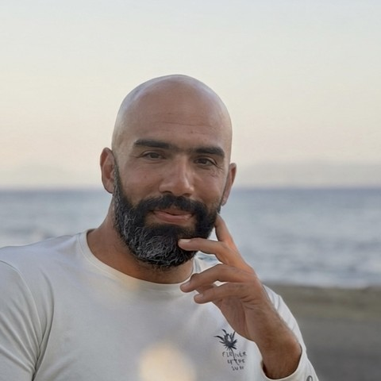
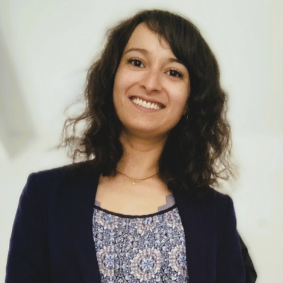

Mit Cihan Metin Yildirimtürk und Suzel Hammer
Unkompliziert Termin buchen** und flexibel entscheiden: bequem von zu Hause per Videosprechstunde* oder persönlich in unserer Praxis in Hürth.
Rezepte nur nach ärztlicher Einschätzung der medizinischen Eignung.***
Kurze Termine im Minutentakt, kaum Zeit für Fragen, das Gefühl, nur eine Nummer zu sein: Das kennen viele aus der Regelversorgung. Bei LuxDocs nehmen sich zwei Ärzte bewusst Zeit für dich.
Bei LuxDocs bringen zwei Ärzte ihre jeweilige Erfahrung zusammen. Beide verstehen ihre Beratung als persönliche, gesprächsorientierte Ergänzung zur bestehenden haus- und fachärztlichen Versorgung, fundiert, interdisziplinär und ohne Denkverbote. Im Mittelpunkt steht ein ganzheitlicher Blick auf Körper, Psyche und Lebensumstände, der pflanzliche und komplementäre Ansätze dort einbezieht, wo sie sinnvoll erscheinen.

Schaut bewusst über den fachlichen Tellerrand hinaus: ausführliche Anamnese, individuelle Betrachtung und gemeinsam erarbeitete Präventionsstrategien.

Verbindet einen ganzheitlichen Behandlungs- und Coaching-Ansatz mit klinischer Erfahrung, als Ergänzung zur bestehenden ärztlichen Betreuung.
Du entscheidest, wie deine Beratung stattfindet, bei Cihan und Suzel ist beides über Jameda buchbar.
Ärztliche Beratung per Video, ganz ohne Anfahrt. Ideal, wenn du zeitlich flexibel bleiben möchtest.
Beratung face-to-face in unserer Praxis: An d. Hasenkaule 10, 50354 Hürth.
In drei Schritten zu deinem Termin.
Wähle Cihan oder Suzel und buche über Jameda, Video oder vor Ort.
Wir besprechen deine Beschwerden und mögliche Behandlungsoptionen.
Bei medizinischer Eignung erhältst du dein Rezept, wahlweise mit Folgeterminen.
Ein Klick, dann wählst du Cihan oder Suzel.
LuxDocs
An d. Hasenkaule 10
50354 Hürth
* Nicht jede Behandlung eignet sich für eine Videosprechstunde. Voraussetzung ist, dass die anerkannten fachlichen Standards nach § 630a BGB eingehalten werden, also der aktuelle Stand medizinischer Erkenntnisse und ärztlicher Erfahrung, und der Arzt zu dem Schluss kommt, dass ein persönlicher Termin vor Ort für das jeweilige Beschwerdebild nicht zwingend notwendig ist. Ein Rezept wird ausschließlich bei entsprechender medizinischer Eignung ausgestellt. Das Angebot einer Beratung per Video bezieht sich damit nicht pauschal auf jede Behandlung, sondern jeweils auf einzelne Krankheitsbilder, bei denen laut anerkannten fachlichen Standards kein persönlicher Kontakt erforderlich ist.
** Für die Terminbuchung über Jameda ist weder eine Registrierung noch ein eigenes Benutzerkonto notwendig. Erfasst werden lediglich Name, E-Mail-Adresse für die Terminbestätigung sowie optional eine Telefonnummer für Rückfragen. Gesundheitsbezogene Angaben, etwa zu Vorerkrankungen oder zur Krankengeschichte, sind kein Bestandteil der Buchung, sondern werden erst im persönlichen Beratungsgespräch besprochen. So bleibt die bei der Buchung erhobene Datenmenge auf das Nötigste beschränkt.
*** Ein Rezept für medizinisches Cannabis wird nur dann ausgestellt, wenn die ärztliche Einschätzung eine passende Indikation ergibt und die Eignung für eine Cannabistherapie besteht. Ein Beratungsgespräch führt also nicht automatisch zu einem Rezept, die Verordnung erfolgt erst nach sorgfältiger medizinischer Prüfung im Einzelfall.
Ausführliche Regelungen findest du in unseren AGB.
Die Buchung erfolgt extern über Jameda, in einem neuen Tab.